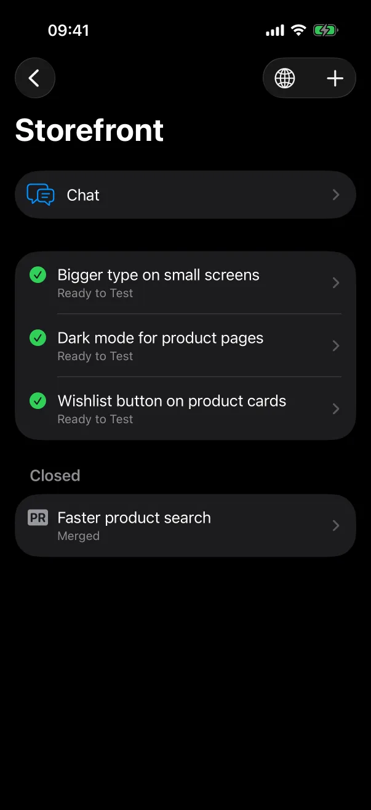
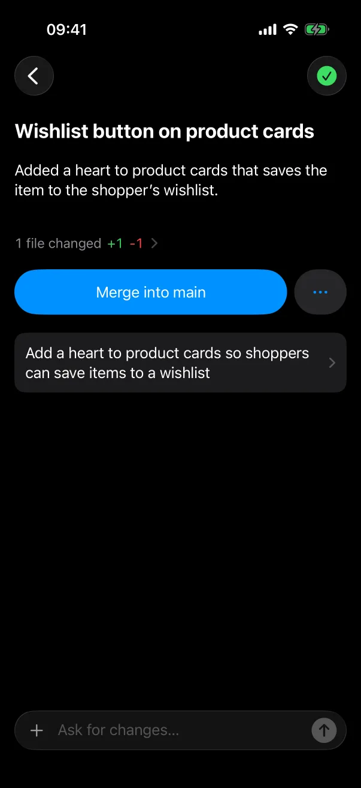

Run them all
at once.
?It asks only
Write the task. Shift handles the agent, the branch and the server.

The iPhone app follows every task on your Mac.


Schedule a prompt. Each run is a task, ready when you are.
Uses the coding agents you already have.
Free & open source · macOS 26+ · iPhone app